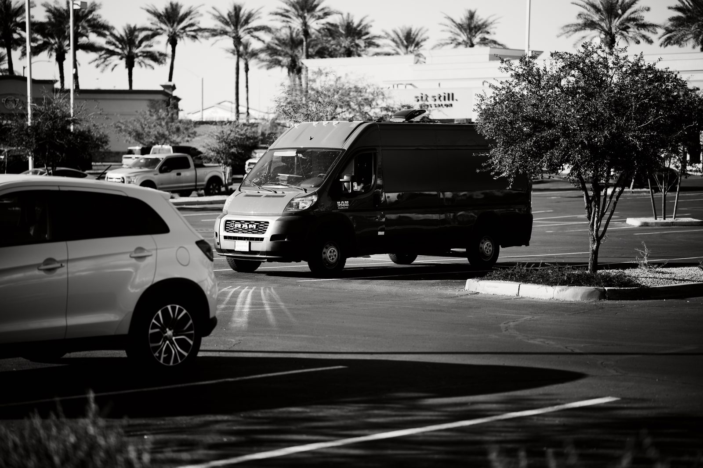
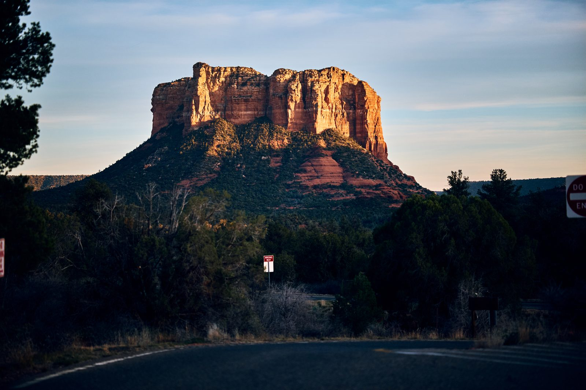
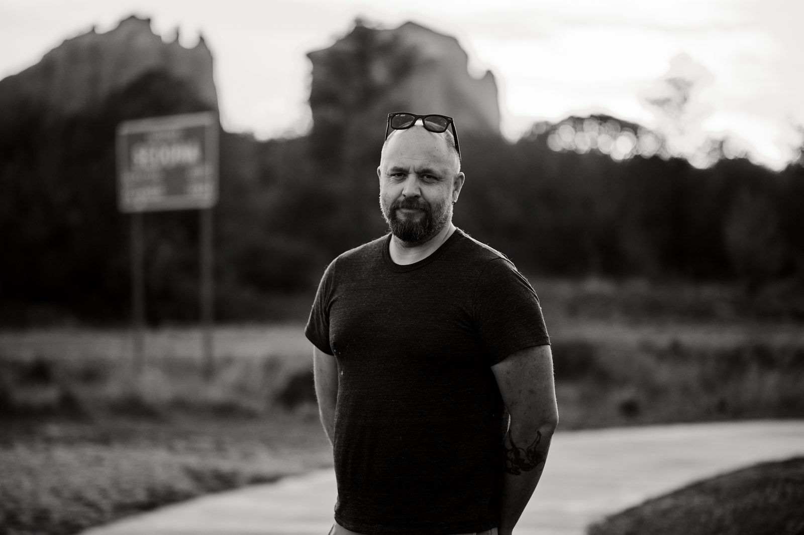

Episode 05Road Notes

How to sleep in parking lots
A practical episode on overnights, routine, public space, and why the fantasy version of van life is structurally useless.

A practical episode on overnights, routine, public space, and why the fantasy version of van life is structurally useless.

Bodies, lenses, recipes, weather compromises, and what actually stays in the van after the first six months.

On confidence, timing, and getting useful human frames in places that are not built for performance.